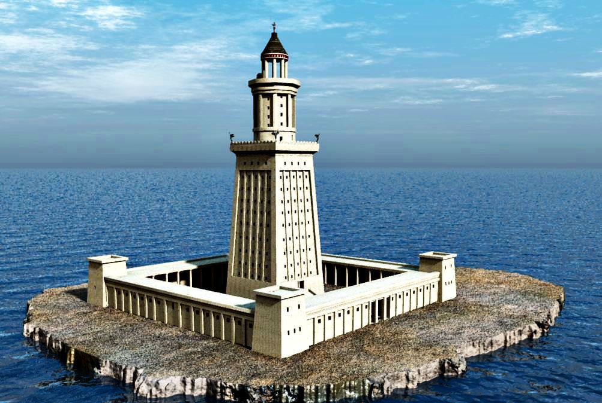

Acerca del Faro de Alejandría
Hace mucho tiempo, en Egipto, había un faro gigante que guiaba a los barcos en la oscuridad. Se llamaba el Faro de Alejandría, y estaba hecho de piedra blanca que brillaba al sol. Por la noche, encendían una gran fogata en la cima para que los marineros no se perdieran. Aunque ya no existe, las historias del faro nos recuerdan lo importante que es ayudar a los demás a encontrar su camino, como lo hacía su luz. ¡Es un símbolo de guía y esperanza!
Actividades
- Haz un faro: Usen una linterna y cartón para construir un pequeño faro en casa. Pueden decorarlo con papeles de colores.
- Cuenta historias de viajes: Imagina que eres un marinero guiado por el faro. ¿A dónde vas? ¿Qué aventuras encuentras?